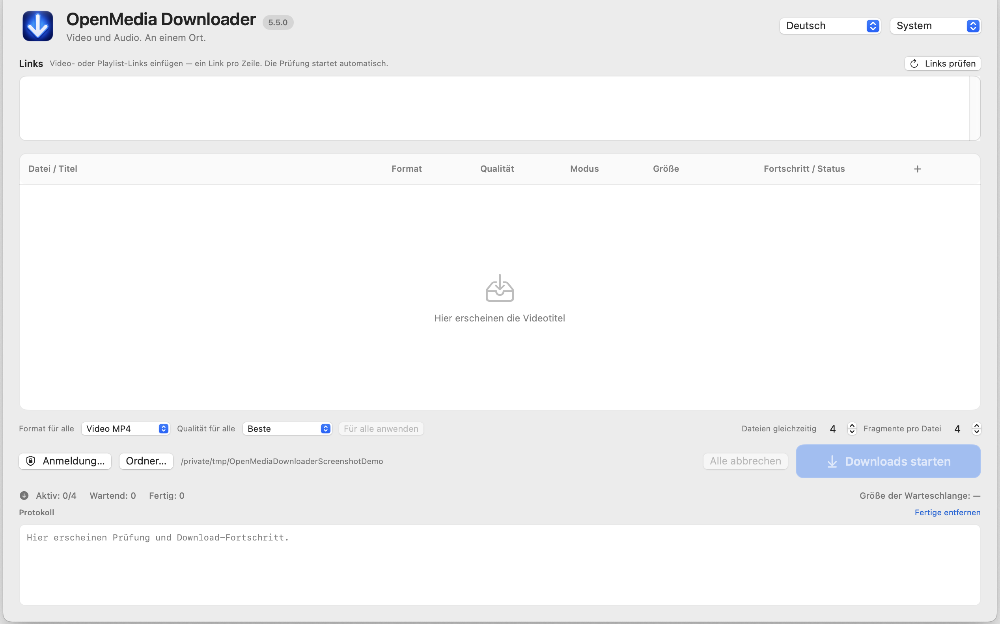

macOS 15+ · Apple Silicon
OpenMedia Downloader
Prüft unterstützte Medienlinks und ermöglicht erlaubte Downloads oder die Aufzeichnung unterstützter Streams.
Nur Quellcode · 5.5.0Vor dem StartNur Quellcode: Freigabe der gebündelten Fremdkomponenten für eine App-Veröffentlichung steht aus. Nur berechtigte Medien speichern.
Kein fertiges Installationspaket. Die Anleitung beschreibt die Einrichtung aus dem Quellcode.


So funktioniert es
- Quellcode ansehen
- Umgebung einrichten
- Erlaubte Medien verwenden
Erste Schritte
Dokumentation und Veröffentlichungsstatus lesen. Derzeit wird kein fertiges App-DMG oder ZIP angeboten.